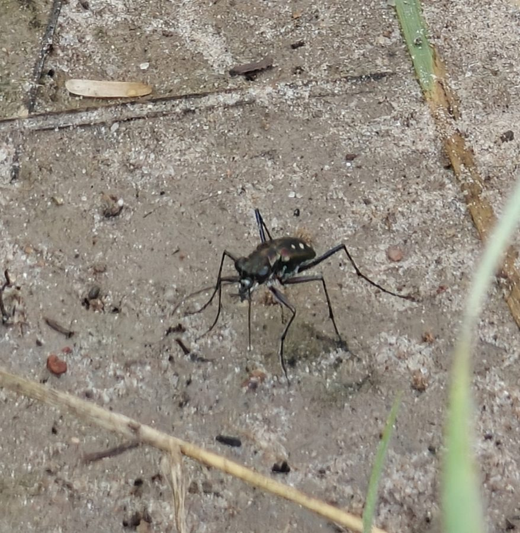

टाइगर बीटलSix-spotted Tiger Beetle
Cicindela sexpunctata · Carabidae · INS-0107

- Scientific name वैज्ञानिक नाम
- Cicindela sexpunctata Fabricius, 1787
- Family कुल
- Carabidae
- Hindi हिंदी
- टाइगर बीटल
- Local names स्थानीय नाम
- tiger beetle, tiger bitil, taiger beetle
- Status here यहाँ की स्थिति
- native
- Movement आवागमन
- Resident, here all year
- IUCN IUCN
- not evaluated
- Review समीक्षा
- audited and independently read
When to look कब देखें
Present all year. साल भर मौजूद।
Uses and possibilities उपयोग और संभावनाएँ
Drawn from the documented uses in the profile below, where each is labelled traditional, current or a research lead. All uses →
टाइगर बीटल / Six-spotted Tiger Beetle
Cicindela sexpunctata Fabricius, 1787 — Carabidae
टाइगर बीटल — तालाब और नहर के किनारे की रेत और कंकड़ पर जमीन से कुछ सेंटीमीटर ऊपर उड़ने वाली एक छोटी, शानदार हरी-नीली धातु जैसी बीटल। इसका सिर बड़ा, आँखें उभरी हुई, जबड़े तेज़। जब कोई कीड़ा पास आए, यह बिजली की तेज़ी से दबोच लेता है। इसका लार्वा अपने को बालू में गहरे सुराग में छिपा लेता है और ऊपर आने वाले शिकार को खींच लेता है।
Quick Identification त्वरित पहचान
| Feature | Description |
|---|---|
| Size | Body length 10–15 mm |
| Colour | Bright metallic green, blue-green or bronze; wing covers with white or cream spots (usually six) |
| Head | Large, broad; prominent compound eyes; stout curved mandibles |
| Thorax | Metallic green, narrower than the head |
| Legs | Long, slender, reddish or greenish; adapted for running |
| Wings | Hard wing covers with longitudinal lines and white spots |
| Activity | Diurnal, fast-moving; alert and wary |
Field tip: A metallic green or blue beetle running fast on bare sand near a pond, pausing frequently to look up, with white spots on its wing covers. It flies low and lands in the same spot repeatedly when disturbed. Found only on bare ground, never on vegetation. The running gait — stop, sprint, stop — is distinctive.
हिंदी — कैसे पहचानें: तालाब की रेत पर, तेज़ दौड़ने वाली, चमकीली हरी बीटल; बड़ी आँखें, तेज़ जबड़े; सफ़ेद धब्बे; जब पास जाओ तो बिजली की गति से भाग जाती है।
Morphology आकारिकी
Biometrics:
| Measurement | Range |
|---|---|
| Body length | 10–15 mm |
| Pronotal width | 2.5–3.5 mm |
| Elytra length | 7–10 mm |
Structure: Head large and broad with prominent eyes occupying much of the lateral surface; large, curved mandibles, slightly porrect. Pronotum narrower than head, shining, with fine setae. Elytra smooth, with shallow longitudinal lines and a pattern of white or cream-coloured spots arranged across the surface (usually six, whence the name sexpunctata). Legs long and slender, adapted for running; tarsal claws simple.
Sexual dimorphism: Females generally slightly larger than males and darker in colour. Males have enlarged mandibles.
Behaviour & Ecology व्यवहार और पारिस्थितिकी
A diurnal, fast-running ambush predator of open sandy and gravelly habitats. It perches on exposed bare ground, alert with raised head, waiting for small arthropods — ants, small beetles, flies — to approach. On detection of movement, it sprints at high speed and captures prey with its powerful mandibles. Flight is quick and low, covering only a few metres before landing; it returns to the same spot repeatedly. Highly territorial and difficult to approach; at the slightest disturbance it flies up and lands several metres away.
Nocturnal behaviour is largely unknown, but the adult likely hides in cracks or burrows in the soil. The species is sun-dependent and active only in daylight on warm days.
हिंदी: दिन की रोशनी में खुली रेत पर शिकार करने वाली बीटल। छोटे कीड़े आएँ तो दौड़ कर पकड़ लेता है। हवा ही नहीं, तुम्हारे पैर की आहट पर भी उड़ जाता है और कुछ दूर पर फिर उतर जाता है।
Life Cycle / Phenology जीवन चक्र
| Month / season | Event |
|---|---|
| March–May | Adults emerge and feed actively as temperature rises |
| April–June | Mating; females deposit eggs in burrows in sand |
| June–July | Eggs hatch; larva excavates a vertical burrow with a hinged lid of soil and silk |
| July–September | Larval development; larva waits in burrow for small prey to step on the lid |
| September–October | Larvae pupate in the burrow |
| October–November | Adults emerge and feed before overwintering |
| December–February | Dormant in soil and burrows |
Host Plants or Prey आहार
Prey (adults):
- Small beetles
- Ants
- Flies (Diptera)
- Small spiders
- Insect larvae and pupae
Prey (larvae):
- Ants
- Small arthropods falling into or wandering above the burrow opening
- Collembola (springtails)
- Small caterpillars
Predators / Natural Enemies शत्रु
- Spiders: hunting spiders (Lycosidae, Salticidae) and web spiders
- Robber flies: Asilidae
- Wasps: parasitoid wasps
- Birds: bee-eaters and other insectivores
Agricultural / Human Relevance कृषि प्रासंगिकता
Ecological indicator. The presence of tiger beetles is a sign of healthy, undisturbed open habitats. They are too small to have agricultural impact but serve as indicators of soil quality and the absence of heavy pesticide use, since they are sensitive to insecticides. Their larvae depend on stable burrows, so compacted or eroded soil eliminates them.
Sport and natural history. Widely collected by naturalists and insect enthusiasts worldwide; their brilliant colours and distinctive behaviour make them popular subjects for photography.
Traditional and Ethnobotanical Use: none recorded for the region.
Today. A beneficial predator of ant colonies and small pest insects. Habitat loss through agricultural intensification and urban development is the main threat.
Research direction (a lead, not a result). Tiger beetle diversity and habitat quality correlate well in temperate regions, making them useful bioindicators; a district-level survey would assess the condition of open habitats.
हिंदी: खुली रेत यह दिखाती है कि वह जगह ठीक है। कीटनाशकों से यह मर जाता है। बाँध, पक्की सड़क — ये इसे ख़त्म कर देते हैं।
Expected Locally स्थानीय रूप से अपेक्षित
Not a field record. Written from published accounts for eastern Uttar Pradesh. No confirmed local sighting yet — if you have seen it, that is what the atlas needs.
अभी तक स्थानीय पुष्टि नहीं। यह विवरण प्रकाशित स्रोतों से है, किसी अवलोकन से नहीं।
Expected on bare sandy embankments of the Rapti, Gomti, and Ghaghra rivers, and on sand bars within flooded fields during the dry season. Any stretch of undisturbed sandy ground near a water body is a likely locality. A photograph showing the metallic colour, size, and habitat is a confirmed record.
Distribution वितरण
Global range: Asia from the Middle East through India to South-east Asia and southern China.
In India: Widespread in the plains and lower hills, wherever suitable sandy or gravelly habitats occur.
In Uttar Pradesh: Common along river banks and floodplain habitats throughout.
In Basti district / eastern UP: Expected along the Rapti, Gomti and tributary channels; likely in fallow fields with sandy expanses.
Research Questions शोध प्रश्न
- On which date do adult tiger beetles first appear in spring, and how does this vary year to year? / टाइगर बीटल बसंत में किस तारीख़ को निकलती है? — Watch a sandy spot weekly in March and April.
- How far does a tiger beetle run before it stops, and does it return to the same spot? / यह कितनी दूर दौड़ती है? — Mark a spot with chalk and follow one for 10 minutes.
- What is the smallest prey it will attack? — Offer ants and small flies in a container.
- Can you find the larva's burrow and see it pull down its prey? / इसके लार्वे का सुराग कहाँ होता है? — Dig carefully in sandy soil in July.
- Does it prefer certain types of sand or gravel? — Survey different substrates for presence.
Similar Species मिलती-जुलती प्रजातियाँ
| Species | How to tell apart | हिंदी |
|---|---|---|
| Cosmodela aurulenta (Golden-spotted Tiger Beetle) | Larger; metallic blue-green with three pairs of yellow spots; also on sandy river banks | सुनहरे धब्बों वाला टाइगर बीटल |
| Other carabid beetles | Generally smaller, dull-coloured, found on vegetation rather than bare ground; slower runners | गहरे रंग, दौड़ते नहीं, घास पर |
Field rule: A bright metallic green beetle, 10–15 mm, with white spots on its wing covers, running fast on bare sand near water and flying away when approached, is a tiger beetle.
Taxonomy & Classification वर्गीकरण
Original description. Fabricius described Cicindela sexpunctata in 1787 in Mantissa Insectorum, the type locality being India. The species name refers to the six white spots on the elytra.
Subspecies. Monotypic — no subspecies are currently recognised.
Family and order placement. Carabidae (ground beetles), order Coleoptera. Cicindelinae (tiger beetles) is a subfamily, one of the most derived groups within Carabidae, specialized for diurnal hunting.
Phylogenetic notes. Cicindela is the most diverse and widespread genus of tiger beetles in the Old World; the group is basal to Carabidae, retaining primitive characters like the lack of a dorsal lens in the compound eye.
IUCN status rationale. Not evaluated. Widespread and common in suitable habitats; however, habitat loss is a localized threat.
Photo Gallery फोटो गैलरी
Photos needed आवश्यक फोटो
- [ ] Adult on sandy ground (रेत पर बीटल)
- [ ] Close-up showing metallic colour and white spots (करीब से)
- [ ] Larval burrow with or without adult nearby (लार्वे का सुराग)
No photos yet — add field photos to media/species/tiger_beetle/ and run node scripts/sync_photos.js.
References संदर्भ
- Fabricius, J.C. (1787). Mantissa Insectorum, vol. 1. Proft, Copenhagen. [original description]
- Hope, F.W. (1831). Coleopterist's Manual, vol. 1. J. Bohn, London.
- Rivalier, E. (1954). Monographie des Cicindelidae – Carabidae d'Asie. Revue Française d'Entomologie 21: 1–341.
- Pearson, D.L. & Vogler, A.P. (2001). Tiger beetles: the evolution, ecology and diversity of the Cicindelidae. Oxford University Press, Oxford.
- Chattopadhyay, A., Mitra, B. & Mandal, D.P. (2008). Tiger beetles of India and neighbouring countries. Records of the Zoological Survey of India 108(3/4): 1–225.
- GBIF Occurrence Data — Cicindela sexpunctata, India (2026).
Source file: species/fauna/insects/tiger_beetle.md